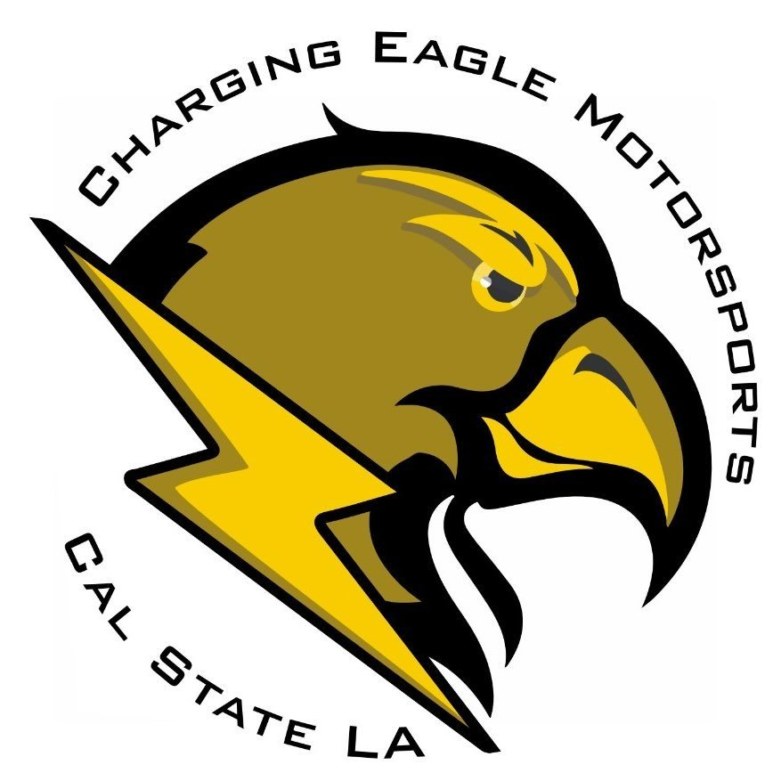

EcoCAR begins in Atlanta
The opening workshop brought the new university teams together for the first phase of the challenge.
View update
Cal State LA EcoCARJoin the teamCal State LA students joined the opening Fall Workshop as the four-year challenge officially got underway.
View update
The opening workshop brought the new university teams together for the first phase of the challenge.
View updateCal State LA was selected as one of twenty North American universities and the only participant from California.
Read announcementThe Charging Eagles completed the Battery Workforce Challenge with recognition for module manufacturability.
View on LinkedIn
New student profiles, build milestones and workshop recaps will be published here.
Follow on Instagram